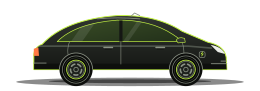

Unternehmen
Ein Autohersteller,
der wie ein Investor denkt.
Tangerine Motors baut vier Fahrzeuglinien für vier klar getrennte Kundengruppen – und steuert sie wie ein Portfolio.
Strategie
Jede Linie hat eine Rolle im Portfolio
Low Cost
Kostenführer

Clementine · Robust, geräumig, ehrlich kalkuliert.
Family
Cash Cow

Grove · Platz für alle. Verlässlich jeden Tag.
Eco-Friendly
Wachstumslinie

Zest · Gebaut um den Verbrauch herum.
Image
Markenführer

Sanguine GT · Neuheit, Technik und Marke.
Meilensteine
Von sechs gleichen Unternehmen zu einem Hersteller in zwei Regionen
P1
Gleicher Start
Sechs identische Unternehmen, Marktanteile je Linie zwischen 16 % und 17 % in Region 1.
P5
Fusion: Region 2
Mit der Fusion kam Region 2 hinzu. Dort sind wir mit Clementine, Grove und Sanguine GT vertreten; der Zest wird bisher nicht angeboten.
P8
FY26
Zest führt in Region 1 mit 28 %, Grove hält in Region 2 32 %, Sanguine GT 100 % im Image-Segment.
Verbrauch & Emissionen
Alle vier Linien auf Verbrauchsstufe 10 von 10
In Periode 1 lag die Stufe je nach Linie zwischen 2 und 10; im FY26 erreichen Clementine, Grove, Zest und Sanguine GT in beiden Regionen den Höchstwert.
Kriterium „Consumption / Pollution“ · Quelle: Group Oragange All Data .xlsx
Menschen
Ein Team, sechs Verantwortungen
CEO, CFO und vier Linien-Direktoren entscheiden gemeinsam über Kapital, Kapazität und Produkt. Zum Vorstand